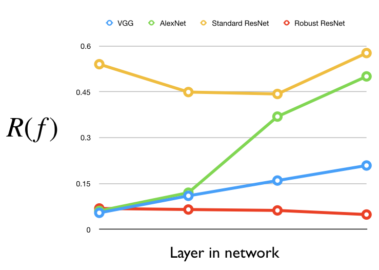
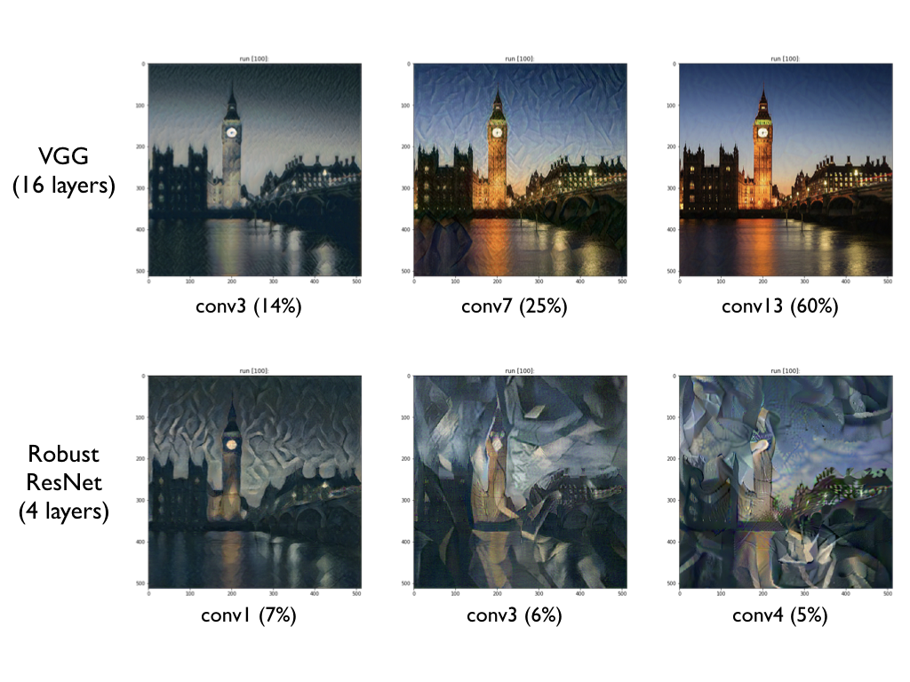
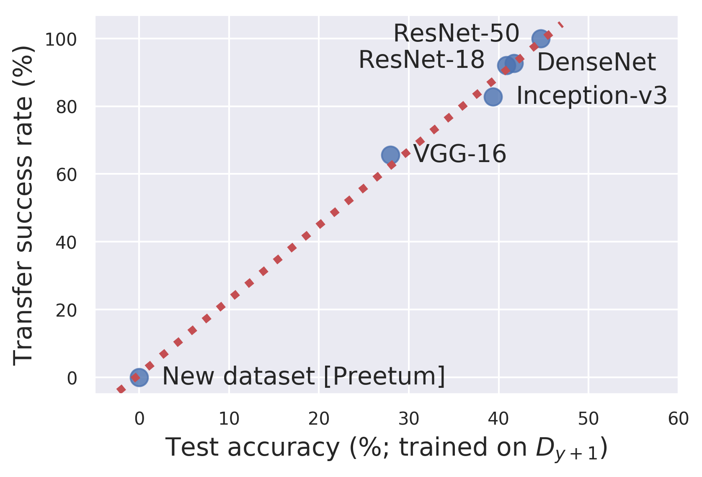

本文是对 Ilyas 等人的论文《对抗样本不是 bug，而是 feature》相关讨论的一部分。您可以在关于《对抗样本不是 bug，而是 feature》的讨论中了解更多主要讨论内容。
其他评论
Ilyas 等人的评论
我们要感谢所有参与讨论的评论者，感谢他们花费时间设计实验、进行分析、复现以及扩展我们的结果。这些评论帮助我们进一步深化了对抗样本的理解（例如通过可视化有用的非稳健特征，或展示稳健模型如何在下游任务中取得成功），同时也指出了我们表述中可以更加清晰和明确的地方。
我们的回应组织如下：首先回顾论文的主要结论，然后澄清本次讨论中浮现的一些问题。之后我们逐一回应每条评论，并在较长的回应前附上简短总结。
我们在此也回顾一下我们的论文中提到的部分术语，这些术语将在回应中出现：
数据集：我们的实验涉及以下给定数据集D（由样本-标签对(x, y)组成）[1]的几种变体：
主要观点
结论一：对抗样本是天生的脆弱性还是有用的特征（敏感性 vs 依赖性）
我们使用非稳健特征进行的实验，目的是理解对抗样本如何适配以下两种世界观：
近期工作提供了一些理论证据，表明对抗样本可能源于有限样本过拟合[(Tanay et al., 2016; Schmidt et al., 2018)]或其他基于测度集中的现象[(Gilmer et al., 2018; Fawzi et al., 2018; Mahloujifar et al., 2019; Shafahi et al., 2019)]，从而支持对对抗样本的“世界一”观点。问题是：“世界一”是否是理解对抗样本的正确方式？如果是，这将是个好消息——在这种思维下，对抗稳健性可能只是获得更好、“无 bug”模型的问题（例如通过减少过拟合）。
然而，我们的研究结果表明，单纯的“世界一”思维无法完全解释对抗脆弱性；必须考虑“世界二”。对抗样本可以——而且如果通过标准方法生成确实会——依赖于“翻转”那些对分类实际有用的特征。具体来说，我们证明，仅依赖对应于标准一阶对抗攻击的扰动，就可以训练出能够泛化到测试集的模型。这意味着这些扰动真正对应于对数据集中的新、未修改输入进行分类时相关的方向。总之，我们的信息是：
对抗脆弱性可能源于翻转数据中对正确输入分类有用的特征。
特别需要注意的是，我们的实验（在\widehat{\mathcal{D}}_{rand}和\widehat{\mathcal{D}}_{det}数据集上训练）在世界一中不会得到相同的结果。具体而言，在上面世界一的“卡通例子”中，分类器对某个在“自然图像”上不泛化的特征坐标f(x)赋予了很大权重w。那么，对任一类别的对抗样本都可以通过让f(x)略为正或略为负来生成。然而，从这些对抗样本学习到的分类器将无法泛化到真实数据集（因为它会学会依赖一个在自然图像上无用的特征）。
结论二：从“无意义”数据中学习
我们实验的另一个启示是，模型甚至可能不需要任何我们人类认为“有意义”的信息，就能（在泛化意义上）在标准图像数据集上表现良好。（我们的\widehat{\mathcal{D}}_{NR}数据集就是完美例证。）
结论三：不能将对抗样本完全归因于 X
我们还表明，无法将对抗样本 conclusively 完全归因于标准训练框架的任何特定方面（BatchNorm、ResNet、SGD 等）。特别是，我们的“稳健数据集”\widehat{\mathcal{D}}_{R}是对任何以下断言的反例：“给定任意数据集，使用 BatchNorm/SGD/ResNet/过参数化等进行训练会导致对抗脆弱性”（因为在\widehat{\mathcal{D}}_{R}上训练的包含所有这些组件的分类器，能够稳健地泛化到 CIFAR-10）。从这个意义上说，数据集显然在对抗样本的出现中起到了作用。（此外，进一步支持这一点的是 Preetum 在此提供的“对抗方块”数据集，只要不存在标签噪声或过拟合，标准网络就不会变得对抗脆弱。）
几点澄清
除了进一步深化我们对抗样本的理解外，这些评论还非常有助于指出我们的论点中哪些方面可以从进一步澄清中受益。为此，我们以下以几个“非论点”的形式做出这些澄清——即我们并不打算提出的主张。我们还将更新论文以明确这些澄清。
非论点一：“对抗样本不可能是 bug”
我们的目标是指出，由于对抗样本可以源于良好泛化的特征，仅仅修补机器学习模型中的“bug”并不能消除对抗脆弱性——我们还需要确保模型学习到正确的特征。然而，这并不意味着对抗脆弱性不能源于“bug”。事实上，请注意多篇论文[(Tanay et al., 2016; Schmidt et al., 2018; Gilmer et al., 2018; Fawzi et al., 2018; Mahloujifar et al., 2019; Shafahi et al., 2019)]已经证明，对抗脆弱性可以源于我们所说的“bug”，例如有限样本过拟合、测度集中、高维性等。此外，我们要感谢 Preetum 指出这一问题可能是一种自然的误解，并在其下方的回应中更深入地探讨了这一点。
非论点二：“对抗样本纯粹是数据集的结果”
尽管我们证明了数据集确实在对抗样本的出现中发挥作用，但我们并不打算声称这种作用是排他性的。特别是，仅仅因为数据允许存在良好泛化的非稳健函数（有用的非稳健特征），并不意味着任何模型都会学会拾取这些特征。例如，可能只有某些特定架构才能学会那些导致对抗样本的良好泛化特征。然而，我们确实证明了存在一种仅通过改变数据集就能诱导稳健模型的方法——因此，我们的结果表明，对抗脆弱性确实无法与数据集完全分离（在结论三中会进一步讨论）。
以下回应也可结合其所针对的评论一起阅读。
返回讨论文章
查看摘要列表。
对评论的回应
对抗样本研究者需要扩展“稳健性”的含义（Dan Hendrycks, Justin Gilmer）
回应总结： 模型仅从数据的高频成分中学习的演示是一个有趣的发现，它为我们提供了另一种模型可以从人类看来“无意义”的数据中学习的方式。 作者完全同意，研究更广泛的稳健性概念将在机器学习中日益重要，并帮助我们更好地把握我们实际希望模型依赖的特征。
回应：模型能够纯粹基于训练集的高频成分正确分类这一事实很巧妙！这很好地补充了我们的一个结论：模型会依赖有用的特征，即使这些特征对人类而言显得难以理解。
此外，虽然对噪声的非稳健性可以作为模型使用非稳健有用特征的指标，但这并非该现象过去主要被看待的方式。更多情况下，机器学习模型对噪声的脆弱性被视为模型固有的缺陷，例如由于边界差。（这种观点在对抗稳健性社区中更为普遍。）因此，人们常常期望朝着“更好”/“无 bug”模型的进展会使它们对噪声和对抗样本更加稳健。
最后，我们完全同意，L_p界限的扰动集合只是我们希望模型对其稳健的扰动中非常小的一个子集。然而，我们工作的重点是人类对齐——为此，我们证明了模型依赖于对人类不可察觉的模式敏感的特征。因此，其他不可理解但有用的特征家族的存在，将为我们的论点提供更多支持——识别和刻画这类特征是未来研究的有趣方向。
稳健特征泄漏（Gabriel Goh）
回应总结： 这是一项深入的调查，它突出了（并清晰可视化了）设计\widehat{\mathcal{D}}_{det}数据集的动机之一。
回应：这条评论提出了一个合理的担忧，这实际上正是我们设计\widehat{\mathcal{D}}_{det}数据集的主要原因之一。 特别回顾\widehat{\mathcal{D}}_{rand}数据集的构造：为每个输入分配一个随机目标标签，然后朝该标签进行 PGD 攻击。请注意，与\widehat{\mathcal{D}}_{det}数据集（其中目标类别是确定性选择的）不同，\widehat{\mathcal{D}}_{rand}数据集允许稳健特征实际上与标签具有（小的）正相关。
为了理解这如何发生，考虑以下简单场景：我们有一个特征f(x)，对猫是1，对狗是-1。如果\epsilon = 0.1，那么f(x)当然是一个稳健特征。然而，随机分配标签（如在数据集\widehat{\mathcal{D}}_{rand}中）会使该特征与分配的标签不相关，即我们会有E[f(x)\cdot y] = 0。在这种情况下，执行目标攻击可能会诱导与分配标签的某种相关性，因为我们可能得到\mathbb{E}[f(x+\eta\cdot\nabla f(x))\cdot y] > \mathbb{E}[f(x)\cdot y] = 0，从而允许模型学会正确分类新输入。
换句话说，从一个没有任何特征的数据集开始，可以在微小扰动中编码稳健特征。相比之下，在\widehat{\mathcal{D}}_{det}数据集中，稳健特征与原始标签相关（因为标签被置换），并且由于它们是稳健的，无法被翻转到与新分配的（错误）标签相关。尽管如此，\widehat{\mathcal{D}}_{rand}数据集仍使我们能够展示（a）基于 PGD 的对抗样本确实改变了数据中的特征，以及（b）模型可以从人类无意义/错误标记的训练数据中学习。而\widehat{\mathcal{D}}_{det}数据集则说明非稳健特征实际上足以实现泛化，并且在自然设置中可能优于稳健特征。
评论中提出的实验是一种巧妙的方式，表明这种泄漏确实可能发生。然而，我们想强调（正如评论本身所做的那样），稳健特征泄漏并不影响我们的主要论点——\widehat{\mathcal{D}}_{det}数据集明确控制了稳健特征泄漏（事实上，它允许我们量化模型对稳健特征与非稳健特征的偏好——参见论文附录 D.6）。
有用非稳健特征的两个例子（Gabriel Goh）
回应总结：这些使用线性模型的实验是可视化真实数据集非稳健特征的重要第一步（从而很好地证实了它们的存在）。此外，“污染的”非稳健特征的理论构造开辟了一个有趣的方向，即发展更细粒度的特征定义。
回应：这些实验（可视化不同线性特征的稳健性和有用性）非常有趣！它们既进一步证实了有用非稳健特征的存在，也朝着可视化这些非稳健特征实际样貌的方向迈进。
我们也赞赏所提供的非稳健特征构造（按照我们理论框架中的定义），它们是有用+稳健与无用+非稳健特征的组合这一观点。我们的理论框架确实允许这种情况，尽管——正如评论者已经指出的——我们的实验结果不允许。（在这个意义上，实验结果和我们的主要结论实际上比我们的理论框架在技术上所能捕捉的更强。）具体来说，在这种情况下，在构造\widehat{\mathcal{D}}_{det}数据集期间，只有特征的非稳健且无用部分会被翻转。因此，在此类数据集上训练的分类器会将具有预测性的稳健特征与错误标签相关联，从而无法在测试集上泛化。相比之下，我们的实验表明在\widehat{\mathcal{D}}_{det}上训练的分类器确实能够泛化。
总体而言，我们在开发理论框架时的重点是使其能够形式化地描述和预测我们实验的结果。正如评论所指出的，提出一个能够非常精确地捕捉非稳健特征的理论框架本身就是一个重要的未来研究方向。
对抗稳健的神经风格迁移（Reiichiro Nakano）
回应总结： 非常有趣的结果，突出了非稳健特征的潜在作用以及稳健模型在下游任务中的实用性。我们很高兴看到稳健训练的模型将在神经网络艺术中产生怎样的影响！ 受这些发现启发，我们也对（非稳健的）VGG 进行了更深入的探讨，并发现了一些稳健性与风格迁移之间有趣的联系。
回应：这些实验真的很酷！防止模型依赖非稳健特征即使在没有明确的任务相关目标的情况下（即我们没有训练网络使其更适合风格迁移），也能改善风格迁移性能，这一点很有趣。
我们也觉得将 VGG 视为“神秘网络”的讨论非常有趣——更全面地理解哪些因素驱动风格迁移性能将很有价值。虽然不是完整答案，但在进一步研究中我们有几点观察：
风格迁移在 AlexNet 上也能工作：关于稳健性是风格迁移“秘密成分”的想法的一个潜在问题可能是 VGG 并不是最自然的稳健网络——AlexNet 才是。然而，根据我们自己的测试，只要使用网络中的几个早期层（与 VGG 类似），风格迁移似乎在 AlexNet 上也能开箱即用：

请注意，即使风格迁移仍然有效，也出现了棋盘格图案——这似乎与评论中在稳健模型背景下注意到的现象类似。这可能进一步表明，这两种现象（棋盘格图案和风格迁移有效）并不像之前认为的那样紧密交织。
从预测稳健性到层稳健性：另一个潜在的问题是，AlexNet 和 VGG 的稳健性并不比 ResNet（风格迁移在其中完全失败）高多少，却似乎具有显著更好的性能。为了尝试解释这一点，请回想风格迁移是通过最小化风格损失和内容损失的组合目标来实现的。然而，我们发现，用于计算风格损失的网络远比用于内容损失的网络重要。以下演示说明了这一点——我们实际上可以使用非稳健的 ResNet 来计算内容损失，一切仍然正常工作：

因此，从现在起，我们使用固定的 ResNet-50 作为内容损失的控制，只关注风格损失。
现在，请注意风格损失的工作方式是使用相关网络的前几层。因此，或许问题不在于 VGG 预测的稳健性，而是我们实际用于风格迁移的那些层的稳健性？
为了测试这一假设，我们将层f的稳健性测量为：
本质上，这个量告诉我们可以在一个小球内改变该层输出f(x)的程度，并除以图像之间表征通常相差多远。我们在下面绘制了几种不同网络前几层的该值：

这里可以清楚看到，VGG 和 AlexNet 的前几层实际上几乎和稳健 ResNet 的前几层一样稳健！这或许是更有说服力的证据，表明稳健性可能确实与 VGG 在风格迁移中的成功有关。
最后，假设我们将风格迁移限制为在计算风格损失时只使用网络的单个层[3]。同样，更稳健的层似乎确实对风格迁移效果更好！由于稳健 ResNet 中的所有层都是稳健的，即使仅使用最后一层，风格迁移也能产生有意义的结果。相反，VGG 和 AlexNet 在较早的层（它们具有非平凡稳健性的层）表现出色，但在仅使用较晚的（非稳健）层时则失败：

当然，这里还有很多工作要做，但我们很高兴看到进一步研究稳健性和 VGG 在基于网络的图像处理中作用的工作。
对抗样本也是 bug（Preetum Nakkiran）
回应总结： 对对抗样本的细粒度考察很好地补充了我们的论点（即非稳健特征存在且对抗样本由它们产生，见结论一），同时提供了一个源于“bug”的对抗样本例子。 所构造的基于“bug”的对抗样本不具有迁移性这一事实，为迁移性与（非稳健）特征之间的联系提供了又一项证据。
回应：如上所述，我们并不打算声称对抗样本完全源于（有用的）特征，而是说有用的非稳健特征存在，因此（至少部分）导致了对抗脆弱性。事实上，先前工作已经在理论上展示了对抗样本如何能源于样本不足[(Schmidt et al., 2018)]或有限样本过拟合[(Tanay et al., 2016)]，而这里提出的实验（特别是对抗方块）构成了这些事实在现实世界中的巧妙演示。
我们的主要论点“对抗样本不会仅仅通过修复模型中的 bug 就消失”并未被源于“bug”的对抗样本的存在所反驳。只要对抗样本可以源于非稳健特征（评论者似乎同意这一点），修复这些 bug 就无法解决对抗样本的问题。
此外，关于来自 PGD 的特征“泄漏”，请回想在我们的 D_det 数据集中，非稳健特征与正确标签相关联，而稳健特征与错误标签相关联。我们想强调的是，如[附录 D.6](LINK)所示，在我们的 D_det 数据集上训练的模型实际上对非稳健特征-标签关联的泛化比对稳健特征-标签关联的泛化更好。相比之下，如果 PGD 引入了非稳健特征的小“泄漏”，那么我们会预期训练出的模型仍将主要使用稳健特征-标签关联。
尽管如此，这些实验巧妙地聚焦于我们对抗样本理解中的一些更细粒度的细微差别。其中特别让我们印象深刻的是，通过创建一组明确不可迁移的对抗样本，也阻止了新分类器从该数据集中学习特征。这一发现因此使对抗样本的可迁移性与其包含的泛化特征之间的联系变得更加强烈！事实上，我们可以将构造的数据集添加到我们的“\widehat{\mathcal{D}}_{det}可学习性 vs 可迁移性”图（论文中的图 3）中——对应于该数据集的点恰好落在趋势线上！

从错误标记数据中学习（Eric Wallace）
回应总结： 这些实验创造性地展示了从“人类无意义”数据中学习特征这一潜在现象实际上可以在广泛的设置中出现。
回应：由于我们的实验在不同架构上都能工作，因此不可能出现权重空间中的“蒸馏”。因此，根据我们的理解，这里提出的“蒸馏”假设指的是“特征蒸馏”（即得到使用与原始模型相同特征的模型），而这实际上也正是我们的假设。值得注意的是，如果对抗样本不是依赖于“翻转”对分类有利的特征，这种特征蒸馏将不可能实现（参见世界一和世界二）——在那种情况下，蒸馏出的模型只会使用泛化很差的特征，因此自身也泛化很差。
此外，我们认为在所呈现的实验中（从错误标记数据中学习），发生了相同类型的蒸馏。例如，一个中等精度的模型可能会将“绿色背景”与“青蛙”相关联，从而将“绿色”图像标记为“青蛙”（例如评论者图中的马）。在该数据集上训练新模型将因此将“绿色”与“青蛙”相关联，并在测试集上获得非平凡的精度（评论中“从 Fashion-MNIST 学习 MNIST”的实验也是如此）。这正好对应于从标签中学习特征，类似于深度网络从人类标注者那里“蒸馏”出良好决策边界。事实上，我们发现这些实验是对特征蒸馏非常有趣的说明，补充了我们的发现。
我们还注意到，这里与逻辑回归的类比仅在线性分类器具有较低 VC 维（即这些分类器的维度为d）时才可能。特别是，对于任何 VC 维为k的分类器，我们至少需要k个点来完全指定该分类器。相反，已经证明神经网络具有极大的 VC 维（特别是大于训练集的大小[(Zhang et al., 2016)]）。因此，尽管用d+1个随机点进行模型一致的标记足以恢复线性模型，但并不一定足以恢复深度神经网络。例如，Milli 等[(Milli et al., 2018)]无法仅使用其在随机高斯输入上的预测来重构 ResNet-18。（请注意我们在实验中使用的是 ResNet-50。）
最后，似乎唯一可能对我们的实验构成问题的解释（即足够多的模型一致的点可以恢复分类器）已经被 Preetum 所做的实验（见 LINK）所反驳。具体来说，Preetum 能够设计一个数据集，其中在模型一致的错误标记输入上训练完全无法恢复原始模型的决策边界。更一般地说，这里提出的“模型蒸馏”视角无法区分 Preetum 下面创建的数据集与使用标准 PGD 创建的数据集（如我们的\widehat{\mathcal{D}}_{det}和\widehat{\mathcal{D}}_{rand}数据集）。